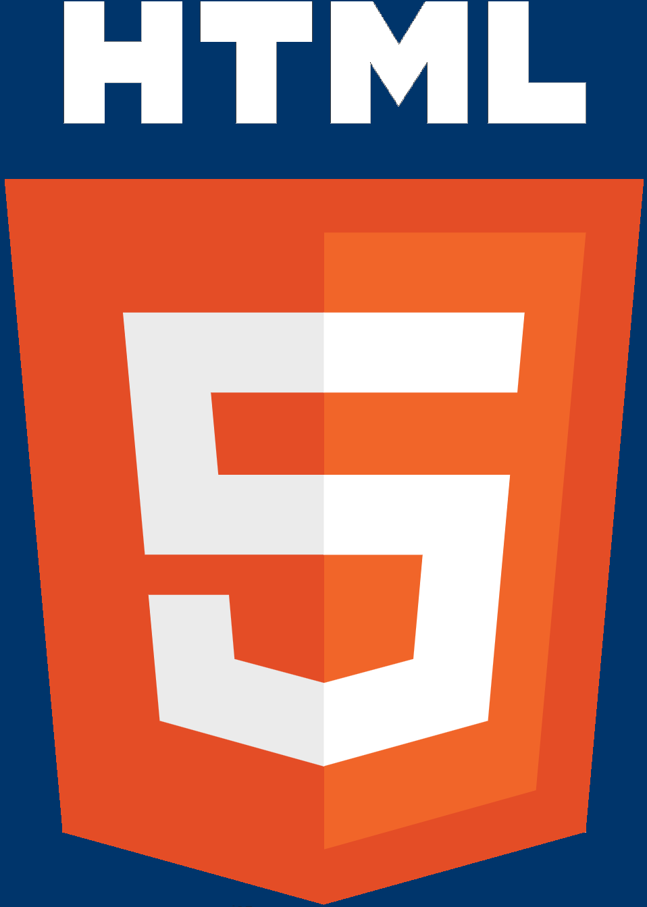
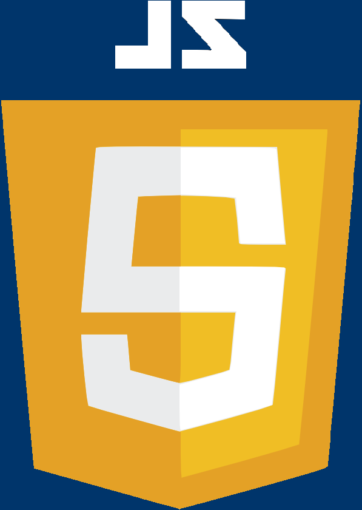

Experience Working With
- HTML 
- CSS

- JavaScript 
- Node.js
- JSON
- Python

- Flask

- Flask-Forms
- WTForms
- SQLAlchemy
- PostgreSQL
- JQuery

- Bootstrap

- Git & GitHub
- Express
- Axios
- Sequalize
- Heroku
I graduated from Arizona State University with a Bachelor of Science degree in Exercise Science & Health. After graduating I started a revolutionary fitness company for 3 years. After being forced to shut down my small business due to the COVID-19 pandemic, I picked up a few books and started learning how to program with HTML, CSS, & JavaScript. I just finished a Python Software Engineering bootcamp and looking for my first job in software.
This project is the capstone project I made for my Python Software Engineering bootcamp. This application is designed to create an online cookbook that users can use to search for recipes by name of recipe or by ingredients. I often find myself wondering what I can make for dinner with the random ingredients I have left over from previous meals. This project allows users to create a profile, login, and reviews for recipes. This was my first project to using Python.

This project is the capstone project for the web foundations portion of my bootcamp. This application is a "Bucket List" for users to track life's achievements. Users can add, delete, save and track objectives and goals they have before they die, with a separate list for all the goals they achieved. When the user achieves their goal they hit the check mark button and moves the goal to the achievement list. This was my first project using backend technologies.

This was the first project I completed on my own while teaching myself HTML and CSS. Coming from the fitness industry, the idea of having a body chart for users to search and find ways to target and stretch different muscle groups is a useful tool to have for clients looking to learn on their own.

I made this website for a friend of mine that is a DJ. She wanted to update her linktree site and add more color. Her identity as a DJ is all pink and girl power. I had a great expierience working with a client to help her achieve the site she wanted. This was one of my earlier projects working with JavaScript.

This project was my first try at building a game using JavaScript. The game keeps track of how many wins you get against the computer. This game was a great way for me to learn how to use the Math.random function, CSS manipulation and a fun way to learn JavaScript.

This project taught me how to position with CSS grid, use game loops, and break up large files into smaller files. It was great practice for learning JavaScript and how all the components come together to make a game. The classic Snake Game! Eat the pellets to get bigger. Avoid Eating yourself or running into the corners.